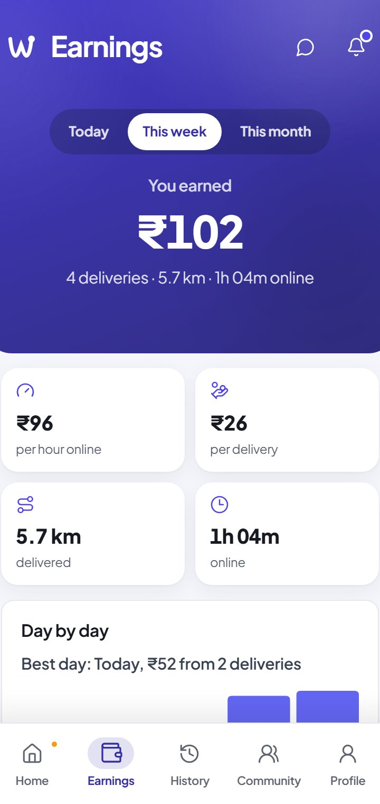

3 Android appsReact · TypeScript · CapacitorSupabase · Postgres
Waggle.
Three apps on one backend: Waggle Gig for riders, Waggle Business for shops, Waggle for customers.
A shop's order becomes a rider's job, with turn-by-turn directions, pickup and delivery codes, and a live map the customer and the shop both follow. Behind it: GST invoicing, riders paid by UPI, month-end billing on a schedule, and the rider's real earnings by the hour.
- 3Apps sharing one Supabase backend, live between them
- 134/134Attack cases on the database rules, all blocked
- 82/82Feature checks passing on every schema change
The full three-app code is private to Gigzen; available on request.
